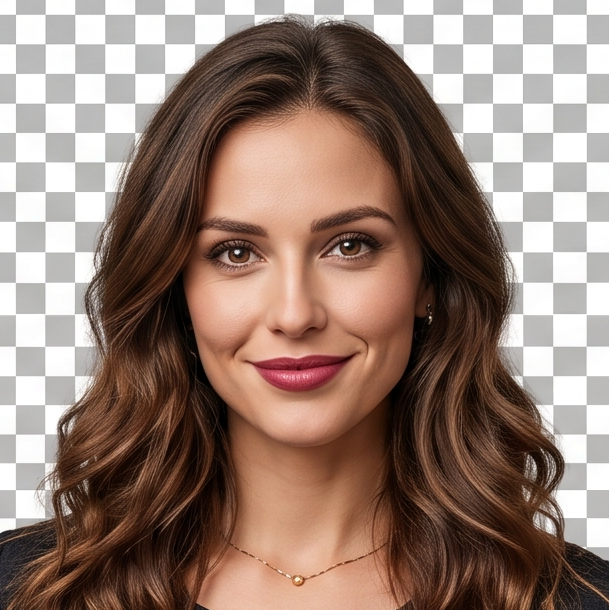
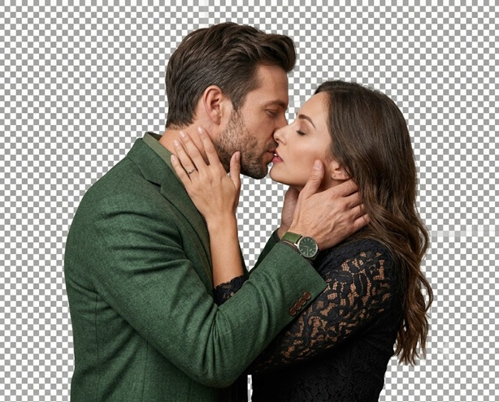
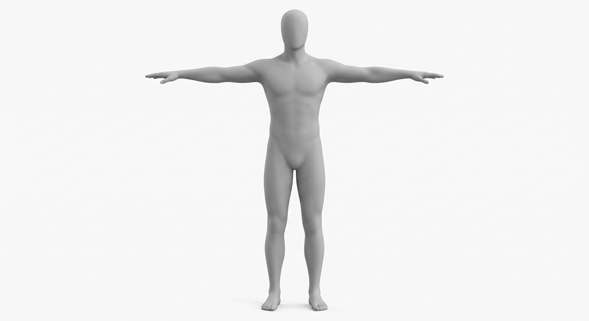

ComfyUI · Configurazione Pipeline
Istruzioni di configurazione per i moduli personalizzati
Questa pipeline utilizza diversi moduli non inclusi in un'installazione standard di ComfyUI. Prima di caricare il JSON del workflow, è necessario installare i pack di nodi personalizzati tramite ComfyUI Manager, scaricare i pesi dei modelli da HuggingFace, preparare le proprie immagini di riferimento dei personaggi e una mesh 3D umanoide. Le tabelle qui di seguito elencano tutto il necessario.
NODI NON STANDARD — COSA INSTALLARE| Nodi nel JSON | Pacchetto | Come installare |
|---|---|---|
CLIPTextEncodeFlux |
Built into ComfyUI core since late 2024 | Aggiorna ComfyUI all'ultima versione — nessuna installazione aggiuntiva se già aggiornato |
ControlNetApply |
ComfyUI-Advanced-ControlNet | ComfyUI Manager → cerca "Advanced ControlNet" |
ApplyPuLIDFlux |
ComfyUI-PuLID-Flux | ComfyUI Manager → cerca "PuLID Flux" |
IPAdapterModelLoaderIPAdapterApply |
ComfyUI_IPAdapter_plus (cubiq) | ComfyUI Manager → cerca "IPAdapter Plus" |
CLIPVisionLoader |
Built into ComfyUI core | Nessuna installazione necessaria |
Load3DMesh3DPoseEditorOrbitCameraRender3DMeshToDepth |
ComfyUI-3D-Pack | ComfyUI Manager → cerca "3D Pack" o "OrbitCamera" |
Tutti i file vanno all'interno della cartella models/ di ComfyUI, nella sottocartella indicata.
| File nel JSON | Scarica da | Sottocartella |
|---|---|---|
flux1-dev.safetensors |
black-forest-labs/FLUX.1-dev ~24 GB — requires licence acceptance |
models/unet/ |
t5xxl_fp16.safetensors |
comfyanonymous/flux_text_encoders | models/clip/ |
clip_l.safetensors |
comfyanonymous/flux_text_encoders | models/clip/ |
ae.safetensors |
black-forest-labs/FLUX.1-dev same repo as flux1-dev |
models/vae/ |
flux-depth-controlnet.safetensors |
Shakker-Labs/FLUX.1-dev-ControlNet-Depth | models/controlnet/ |
ip-adapter_flux.safetensors |
XLabs-AI/flux-ip-adapter | models/ipadapter/ |
sigclip_vision_384.safetensors |
Comfy-Org/sigclip_vision_384 | models/clip_vision/ |
La pipeline utilizza una mesh 3D umanoide per generare una depth map per ogni shot, che ControlNet usa come guida spaziale (posizione del corpo, scala, posa approssimativa nel frame). Senza il file mesh, i nodi Render3DMeshToDepth non producono nulla e il depth guidance di ControlNet viene disabilitato silenziosamente. La mesh non deve essere dettagliata: è sufficiente una figura generica in posa neutra (T-pose). Fonti gratuite consigliate: MakeHuman (esporta direttamente come OBJ, opzione più semplice); Mixamo (T-pose FBX, poi esporta come OBJ da Blender); o qualsiasi OBJ umanoide in posa neutra da CGTrader o Sketchfab. Posizionare il file in ComfyUI/input/generic_humanoid.obj — il nodo Load3DMesh legge dalla cartella input/, la stessa usata da LoadImage.
| File nel JSON | Cosa è | Note | Anteprima" style="width:96px; |
|---|---|---|---|
jim_turnaround.jpg |
Immagine di riferimento corpo intero del personaggio Jim | Usata dall'IP-Adapter per abbigliamento/postura |  |
barbara_turnaround.jpg |
Immagine di riferimento corpo intero del personaggio Barbara | Usata dall'IP-Adapter |  |
jim_face_crop.png |
Ritaglio ravvicinato del volto di Jim (~512×512 px) | Usata da PuLID per la geometria facciale | |
barbara_face_crop.png |
Ritaglio ravvicinato del volto di Barbara (~512×512 px) | Usata da PuLID per la geometria facciale |  |
jim_barbara_ref.jpg |
Riferimento a due personaggi — Jim ed Barbara insieme | Riferimento visivo per gli shot a due personaggi (shot 2 e 5) |  |
generic_humanoid.obj |
Una mesh 3D umanoide in posa neutra (T-pose) | Usata per generare depth map per ogni shot da inviare a ControlNet. Vedi la nota sopra per le fonti consigliate e la cartella di destinazione. |  |
- Aggiorna ComfyUI all'ultima versione prima di tutto il resto (
git pullnella cartella di ComfyUI). - Installa tutti i pack di nodi personalizzati tramite ComfyUI Manager. Riavvia ComfyUI al termine.
- Scarica tutti i file modello e posizionali nelle sottocartelle
models/corrette (vedi tabella sopra). - Prepara le immagini di riferimento — corpo intero (turnaround) e ritaglio ravvicinato del volto per entrambi i personaggi.
- Esporta o scarica una mesh umanoide OBJ in T-pose neutra e posizionala in
ComfyUI/input/generic_humanoid.obj. - Verifica il nome del nodo: controlla che i sei nodi ControlNet nel JSON abbiano
"class_type": "ControlNetApply". Il JSON fornito qui ha già questa correzione applicata. - Carica il JSON in ComfyUI tramite Load → workflow_api_v2.json.
- Aggiorna i quattro nodi
LoadImagecon i tuoi file immagine dei personaggi. - Aggiorna il nodo
Load3DMeshcon il percorso del tuo file.objse il nome del file è diverso. - Queue — ognuno dei 6 shot viene eseguito in sequenza. A 30 step su una 3090, prevedere circa 3–5 minuti per shot.